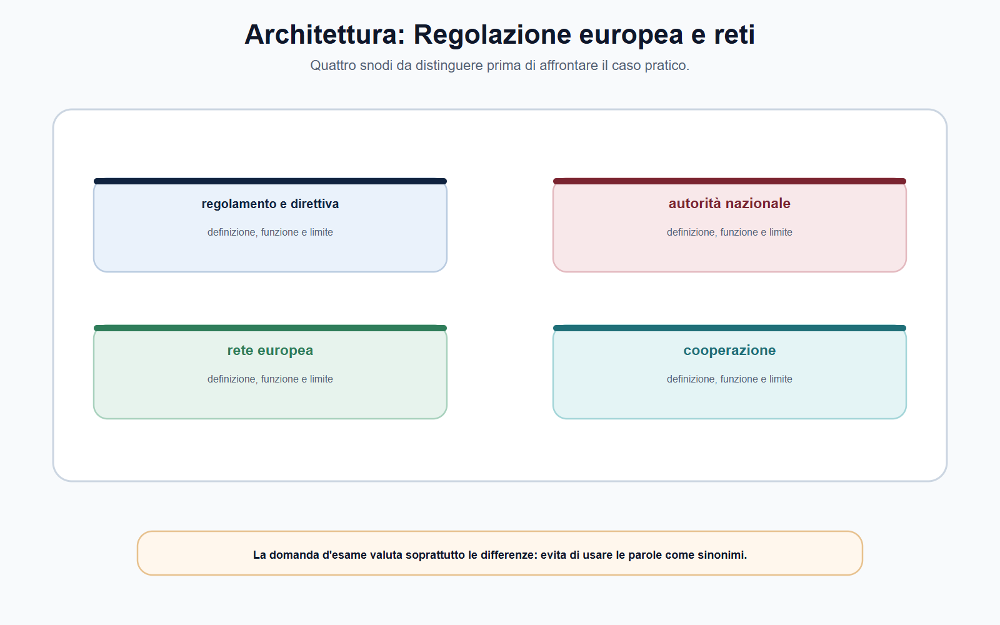
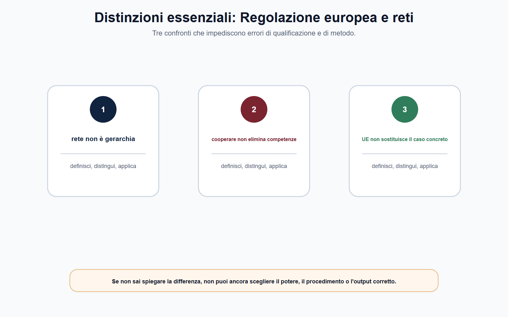
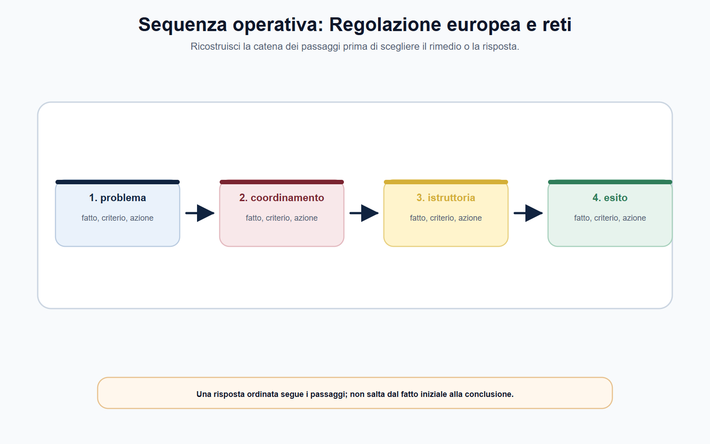
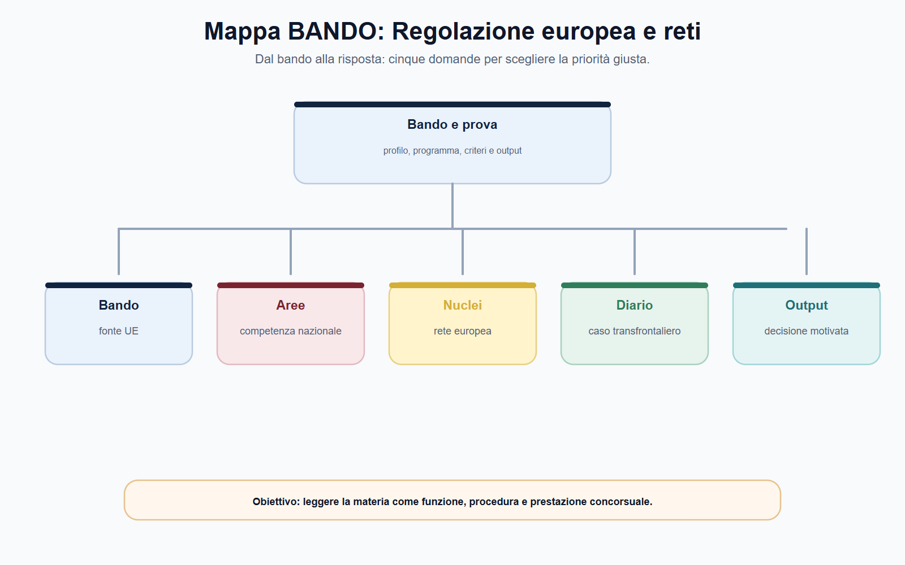

VOL-05 · Capitolo 03
M-FC05
Regolazione europea
multilivello e reti
La formula «l’Unione decide e l’Italia esegue» è insufficiente. Anche l’opposta — «l’Autorità nazionale decide sempre da sola» — è errata. Fonti, istituzioni, agenzie, reti e Autorità nazionali operano secondo competenze distribuite, che cambiano con l’atto, il potere e la fase del procedimento.
01 · Il problema in prova
Chi decide quando il caso è europeo
Mercati finanziari, comunicazioni, piattaforme, energia, concorrenza e protezione dei dati attraversano più Stati membri. Un provvedimento italiano può incidere su operatori presenti altrove; un’informazione nazionale può servire a un’indagine coordinata; un regolamento UE può imporre regole che l’Autorità italiana applica nel proprio perimetro.
Che cos’è il multilivello
Un sistema in cui diritto dell’Unione, istituzioni e organismi europei, Autorità nazionali e giudici concorrono, secondo competenze definite dalle fonti, alla disciplina e all’applicazione di regole comuni. Non è una gerarchia indistinta.
A che serve in prova
A costruire una mappa UE–Italia: fonte, potere, autorità competente, rete applicabile, flusso informativo e rimedio. Se non indichi fonte e titolare del potere, non passare alla rete.
Non partire dal nome della rete. Parti dall’atto che disciplina il caso.
Solo dopo puoi stabilire se e come la rete collega le Autorità competenti. La rete aiuta a svolgere un compito; non crea da sola quel compito.
02 · Fonti
Dalla fonte UE al potere concreto
L’articolo 288 TFUE elenca, tra gli atti dell’Unione, regolamenti, direttive, decisioni, raccomandazioni e pareri. Per la preparazione concorsuale non serve una lezione completa sulle fonti: serve una distinzione operativa. In prova è preferibile parlare di «atto applicabile» e specificarne natura e funzione, anziché usare genericamente «normativa europea».
| Atto | Che cosa è | Domanda da porre |
|---|---|---|
| Regolamento | Portata generale, obbligatorio in tutti i suoi elementi, direttamente applicabile in ciascuno Stato membro. | Ambito, destinatari, compiti alle Autorità, misure nazionali di organizzazione o sanzione, atti secondari. |
| Direttiva | Vincola lo Stato quanto al risultato, lasciando forma e mezzi alle autorità nazionali. | Quale atto nazionale ha dato attuazione e a quale Autorità attribuisce applicazione o vigilanza? |
| Decisioni e soft law | Decisioni, linee guida, orientamenti, pareri, standard tecnici: non hanno tutti la stessa efficacia. | Quale natura e quale funzione ha questo atto nel settore? |
Un regolamento UE non rende sempre superfluo ogni atto nazionale e non attribuisce automaticamente il potere sanzionatorio a tutte le Autorità. La diretta applicabilità non elimina l’analisi della competenza.
03 · Architettura
Quattro snodi, non una scala unica
Un regolamento può disciplinare obblighi e cooperazione; una direttiva può richiedere recepimento; un’agenzia europea può contribuire alla convergenza; un’Autorità italiana può adottare l’atto istruttorio, regolatorio o sanzionatorio. Non esiste una risposta valida per tutti i settori.

Regolamento e direttiva, autorità nazionale, rete europea e cooperazione: quattro snodi da distinguere prima del caso. Non usarli come sinonimi.
04 · Cinque controlli
Multilivello non è gerarchia indistinta
In molti ambiti il diritto UE distribuisce competenze parallele o complementari. In altri individua un’autorità capofila, attribuisce poteri diretti a un organismo europeo o impone consultazione e coordinamento. In altri ancora l’applicazione resta nazionale, ma deve rispettare criteri comuni e canali di cooperazione.
| Domanda | Che cosa occorre verificare |
|---|---|
| Qual è la fonte? | Regolamento, direttiva, decisione o disciplina nazionale di attuazione. |
| Qual è il potere? | Regolazione, vigilanza, raccolta dati, istruttoria, decisione, sanzione o coordinamento. |
| Chi è competente? | Commissione, organismo UE, Autorità nazionale, giudice o più soggetti secondo il procedimento. |
| Quale cooperazione? | Rete, consultazione, scambio informativo, assistenza reciproca, attività congiunta o meccanismo di coerenza. |
| Atto finale e rimedio? | Provvedimento, decisione, parere, misura nazionale o europea; tutela prevista dalla disciplina applicabile. |
Il fatto che una questione sia regolata a livello UE non elimina le forme di tutela nazionali o dell’Unione. Rimedio, giudice competente e impugnazione dipendono dall’atto contestato. In un tema è sufficiente dichiarare il principio e rinviare alla fonte settoriale.
05 · Reti
Funzione, non etichetta
Le reti non sono un semplice luogo di incontro. Sono dispositivi di cooperazione per rendere più coerente l’applicazione delle regole in mercati che non si fermano alle frontiere. Non cancellano la base legale del singolo potere. Un funzionario non trasmette dati o avvia un’attività congiunta solo perché esiste una relazione di collaborazione.
| Rete o sistema | Settore | Che cosa fa, e che cosa non fa |
|---|---|---|
| ECN | Concorrenza | Collega Commissione e Autorità nazionali: informazione su casi e decisioni ipotizzate, coordinamento, assistenza. Competenze parallele richiedono collocazione del caso, non sovrapposizione casuale. |
| BEREC | Comunicazioni | Contribuisce alla coerenza del quadro UE e assiste Commissione e autorità nazionali. Non sostituisce AGCOM: la domanda utile è quale atto attribuisce il potere e quale funzione di supporto svolge BEREC. |
| ACER | Energia | Sostiene e coordina il contributo delle autorità nazionali al mercato interno. Dati, cooperazione e responsabilità differenziate: non «decide tutto ACER». |
| ESFS | Finanza | EBA, ESMA, EIOPA, CERS, Comitato congiunto e autorità nazionali. Ruoli differenziati e coordinati, non assorbimento automatico della competenza nazionale. |
| EDPB | Dati personali | Cooperazione e coerenza. Nei casi transfrontalieri lo sportello unico: capofila e autorità interessate; se manca il consenso, meccanismo di coerenza e, nei casi previsti, decisione vincolante dell’EDPB. |
06 · Distinzioni
Chi coordina non è chi sanziona
La tabella delle reti serve a non confondere l’autorità che coordina con quella che sanziona, il soggetto che emette una linea guida con quello che adotta il provvedimento individuale, la fonte europea con il regolamento interno dell’Autorità.

Se non sai spiegare la differenza, non puoi ancora scegliere il potere, il procedimento o l’output corretto.
07 · Sequenza
Dal fatto transfrontaliero alla decisione
La cooperazione efficace non è informale: è documentata, proporzionata e riconducibile alla fonte. Occorre verificare procedimento, soggetto competente, canale previsto, riservatezza e limiti all’uso delle informazioni.
Fatto
Mercato o servizio con dimensione UE.
Fonte
Atto UE e disciplina nazionale.
Potere
Titolare e oggetto.
Rete
Cooperazione prevista, non inventata.
Poi istruttoria tracciata (dati, riservatezza, confronto, assistenza) e atto finale del soggetto competente, con il rimedio previsto.

08 · REMIT
Due verbi diversi dopo il 2024
Il regolamento REMIT vieta abuso di informazioni privilegiate e manipolazione del mercato energetico all’ingrosso e organizza raccolta, analisi e scambio dei dati. Dopo il regolamento (UE) 2024/1106 non è più corretto presentare ACER come un soggetto che si limita a coordinare.
| Che cosa fa | Che cosa non fa | |
|---|---|---|
| ACER | Nei casi transfrontalieri previsti può condurre proprie indagini: chiedere informazioni, raccogliere dichiarazioni, effettuare ispezioni secondo presupposti, limiti e garanzie europei. Trasmette il rapporto alle autorità nazionali. | Non accerta in via esclusiva la violazione e non adotta le sanzioni nazionali. |
| Autorità nazionale | Resta competente in via esclusiva a stabilire se la violazione si sia verificata e ad adottare le misure di enforcement, comprese le sanzioni consentite dall’ordinamento applicabile. | Non può ignorare cooperazione, garanzie e relazione investigativa europea. |
Il prodotto e la condotta rientrano nel mercato energetico all’ingrosso? La dimensione è nazionale o transfrontaliera? Si distinguono acquisizione della prova, relazione investigativa e decisione finale? Cooperazione, garanzie e rimedio sono ricostruiti? Dire che «decide tutto ACER» è tanto impreciso quanto «ACER raccoglie soltanto dati».
09 · Metodo
Nota di inquadramento, non scorciatoia
Quando il fascicolo ha elementi transfrontalieri, il funzionario non cerca una scorciatoia nell’esperienza informale. Costruisce una nota. La stessa impostazione trasforma la domanda «parli delle reti» in una risposta ordinata.
| Passo | Contenuto |
|---|---|
| 1–2 | Fatto rilevante, mercato o servizio; fonte UE e disciplina nazionale pertinente. |
| 3–4 | Potere da esercitare e Autorità titolare; rete, meccanismo di cooperazione o obbligo di consultazione. |
| 5–6 | Informazioni scambiabili, base procedurale, destinatari, riservatezza; contatti, richieste, risposte e impatto sull’istruttoria. |
| 7 | Atto o proposta per il soggetto competente, senza confondere cooperazione e trasferimento della decisione. |
10 · BANDO
Segnali di ragionamento multilivello
Le formule che seguono nel programma segnalano, di regola, una richiesta di questo tipo. Si studia partendo dalla fonte e dal potere, non dalla sigla della rete.
| Voce | Output da allenare |
|---|---|
| Diritto UE e regolazione | Dieci righe su regolamento e direttiva. |
| Cooperazione europea | Mappa ente–rete–potere–fonte. |
| Vigilanza transfrontaliera | Memo istruttorio di una pagina. |
| Settore dell’Autorità | Caso con distinzione dei ruoli (ECN, BEREC, ACER, ESFS o EDPB). |
Le reti favoriscono coerenza, coordinamento e scambio, ma non attribuiscono automaticamente poteri decisori.

11 · Caso guidato
Reclamo privacy transfrontaliero
Un cittadino italiano presenta un reclamo per un trattamento svolto da una piattaforma che opera in più Stati membri e ha lo stabilimento principale dichiarato in un altro Paese dell’Unione. L’ufficio chiede se possa definire autonomamente il caso perché l’attività riguarda anche interessati residenti in Italia.
| Passaggio | Ragionamento |
|---|---|
| Errore iniziale | Rispondere solo in base al luogo in cui è stato presentato il reclamo. |
| Controlli | Il caso rientra nella disciplina transfrontaliera del GDPR? Quale Autorità è potenzialmente capofila? Quali sono interessate? |
| Cooperazione | Usare il meccanismo previsto, mantenendo reclamo, dati e atti nei canali e nelle forme stabiliti. Niente scambi informali che sostituiscano il procedimento. |
| Ruolo nazionale | L’Autorità non perde rilevanza: partecipa secondo il ruolo attribuito. Se manca l’accordo, si attivano i meccanismi di coerenza e, nei casi previsti, l’EDPB. |
La dimensione transfrontaliera modifica il percorso procedimentale, non autorizza a ignorarlo. La soluzione nasce da fonte, competenza, cooperazione e documentazione.
12 · Verifica
Due domande da saper spiegare
Che cosa si intende per regolazione multilivello e quale funzione hanno le reti?
Diritto dell’Unione, istituzioni e organismi europei, Autorità nazionali e giudici concorrono secondo competenze definite. Non coincide con una gerarchia indistinta. Le reti favoriscono applicazione coerente, coordinamento, assistenza e scambio. Esempi: ECN, BEREC, ACER, ESFS, EDPB. La rete non sostituisce l’Autorità competente: rende possibile una cooperazione disciplinata, tracciabile e rispettosa della riservatezza.
Le reti europee decidono al posto delle Autorità italiane?
No. Una rete può coordinare, assistere, favorire coerenza o attivare meccanismi previsti dalla disciplina settoriale. Il titolare del singolo potere e l’atto finale si individuano nella fonte applicabile.
13 · Mini-esercizio
Una rete, una griglia
Scegli ECN, BEREC, ACER, ESFS o EDPB. Completa i campi con il riferimento puntuale alla fonte ufficiale verificata. L’esercizio è completo solo se distingue chi coordina, chi istruisce e chi decide.
| Campo | Risposta da costruire |
|---|---|
| Settore e problema | Quale mercato o interesse, quale rischio transfrontaliero. |
| Fonte UE di base | Atto, non acronimo isolato. |
| Autorità italiana | Potenzialmente coinvolta, secondo il perimetro. |
| Rete e attività | Che cosa la rete consente o organizza. |
| Limite | Procedura, riservatezza, uso delle informazioni. |
| Atto finale | Soggetto competente, non la rete come tale. |
Stai ricordando un acronimo, non il sistema di competenze. Torna alla fonte.
14 · Controllo incrociato
Tre letture della nota
Una nota professionale su fonti europee deve consentire al decisore di capire che cosa è noto, quale regola si applica e che cosa resta da verificare. Se due fonti sembrano divergere, controlla data, rango, ambito e disciplina transitoria prima di parlare di conflitto.
Candidato
Hai definito le fonti europee senza dilungarti su nozioni estranee? Hai tenuto distinta l’Autorità dal ministero e dall’ente che gestisce un servizio?
Istruttore
Riparto multilivello e reti di regolatori poggiano su documenti? La cooperazione è descritta in ordine cronologico e assegnata al soggetto competente?
Decisore
REMIT e poteri ACER sono collegati al fatto, non a una missione generica? La conclusione sul caso transfrontaliero resta proporzionata alle prove?
15 · Errori
Opzioni quasi corrette
Regola vera, livello sbagliato
Il regolamento è direttamente applicabile, ma bisogna verificare ambito, competenze attribuite, misure nazionali richieste e Autorità individuata per l’enforcement. Confondere rete e titolare del potere è l’errore più frequente.
Dato mobile
Un bando storico o una pagina operativa non vale per ogni procedura successiva. Compiti di ACER, BEREC o EDPB si ricontrollano nella fonte vigente, soprattutto dopo riforme come quella REMIT del 2024.
Se manca un elemento, la risposta indica quale documento o accertamento serve. Dichiarare il limite informativo è più professionale che colmarlo con un automatismo.
16 · Da tenere ferme
Cinque regole, con il perché
1. Si parte dalla fonte e dal potere, non dalla sigla della rete. La rete aiuta a svolgere un compito; non lo crea.
2. Il regolamento è direttamente applicabile; la direttiva richiede di verificare l’attuazione nazionale. Né l’uno né l’altra attribuiscono poteri senza lettura dell’ambito.
3. Multilivello non è gerarchia indistinta: Commissione, organismi UE e Autorità nazionali hanno ruoli che cambiano secondo il settore.
4. Cooperazione efficace significa canale previsto, riservatezza, tracciabilità. Non scambio informale tra uffici amici.
5. Dopo il 2024, su REMIT: ACER indaga nei casi transfrontalieri previsti; l’autorità nazionale accerta ed esegue nel proprio sistema.
Prossimo capitolo
Ciclo regolatorio, consultazione, AIR e VIR
La competenza è collocata. Il capitolo successivo mostra come una misura regolatoria si costruisce: problema, evidenze, opzioni, ascolto, decisione, verifica nel tempo.